Piezas de diseño arquitectónico fabricadas en Solid Surface. Higiene, durabilidad extrema y estética sin uniones para transformar tus espacios.
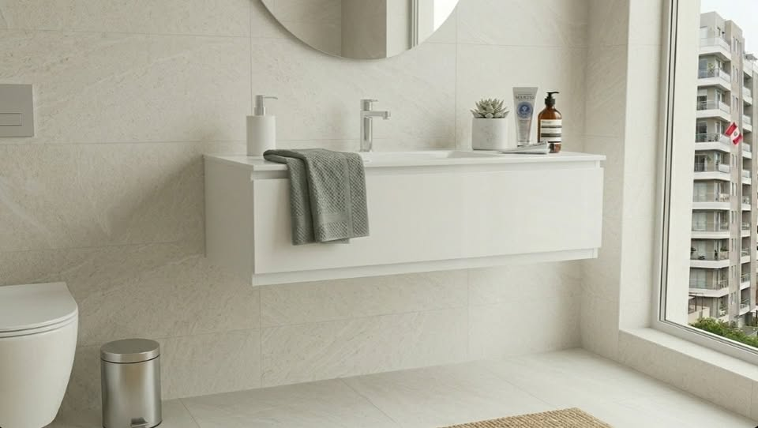
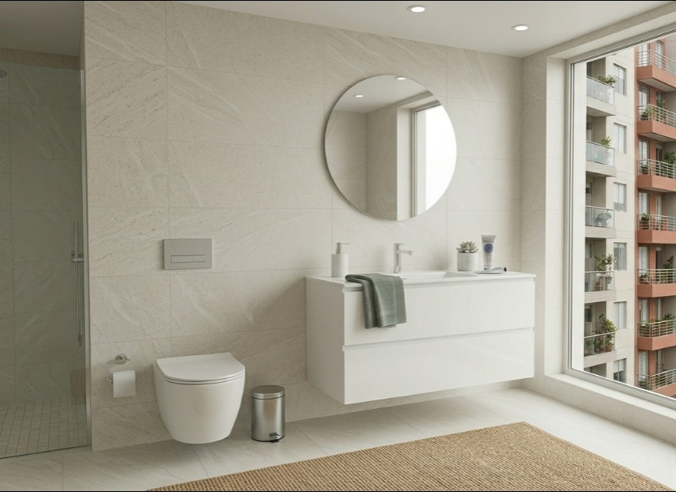
Transforma tu baño en un spa personal con nuestro Vanitorio Suspendido Luminare. Este mueble de baño no es solo una pieza funcional, es una obra de diseño minimalista pensada para quienes buscan lo mejor en estética y durabilidad.
⚪ Diseño Monolítico e Higiénico: La encimera y el lavabo están integrados en una sola pieza de Solid Surface, eliminando uniones donde suele acumularse moho o suciedad. Su acabado ofrece un tacto sedoso y una apariencia de piedra natural premium.
⚪ Superior al Mármol y Melamina Tradicional: A diferencia de los muebles de baño convencionales, nuestro material es 100% impermeable, no se hincha con el vapor y es totalmente reparable. Si se raya o se mancha, se puede pulir y queda como nuevo.
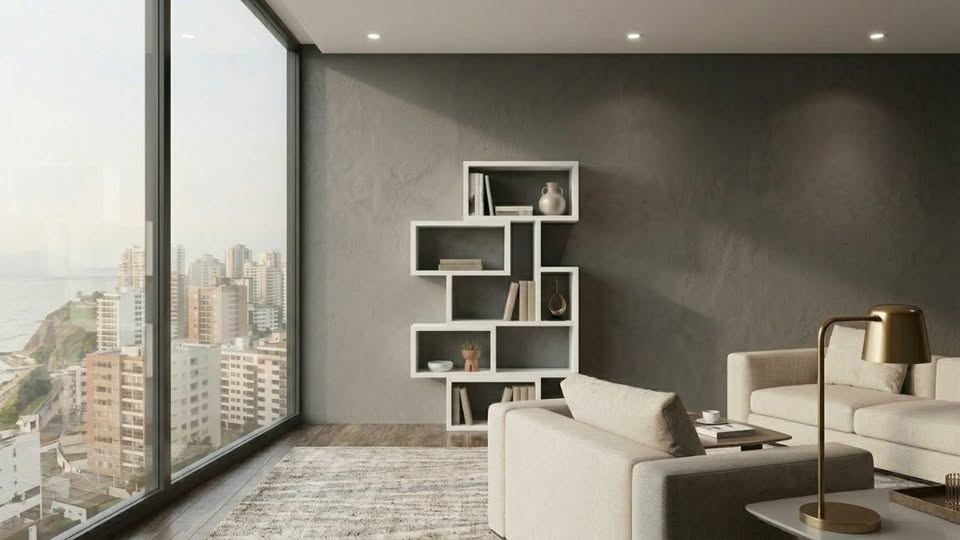
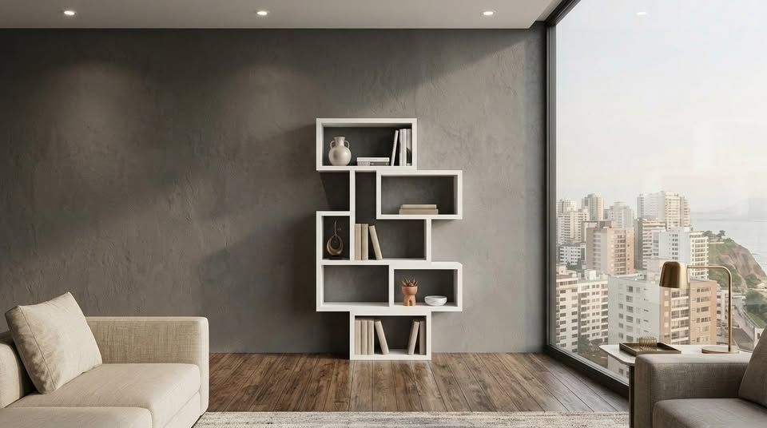
Un diseño arquitectónico en tu hogar. Este estante destaca por su estructura geométrica y asimétrica, perfecta para espacios modernos y elegantes. Sus módulos ofrecen una sensación de movimiento y sofisticación que no encontrarás en los estantes tradicionales.
Ya sea para exhibir tus libros favoritos, obras de arte o plantas, te ofrece infinitas posibilidades de organización. Su acabado en blanco puro es fácil de limpiar y mantener, eliminando las preocupaciones por manchas o rayaduras.
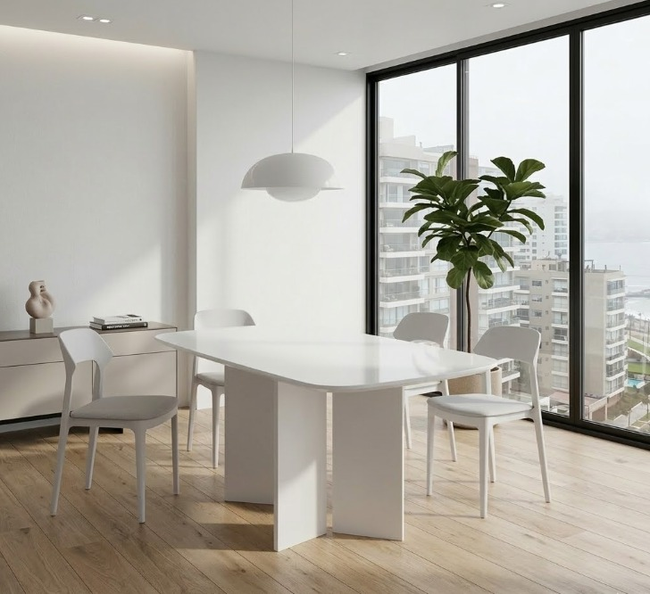
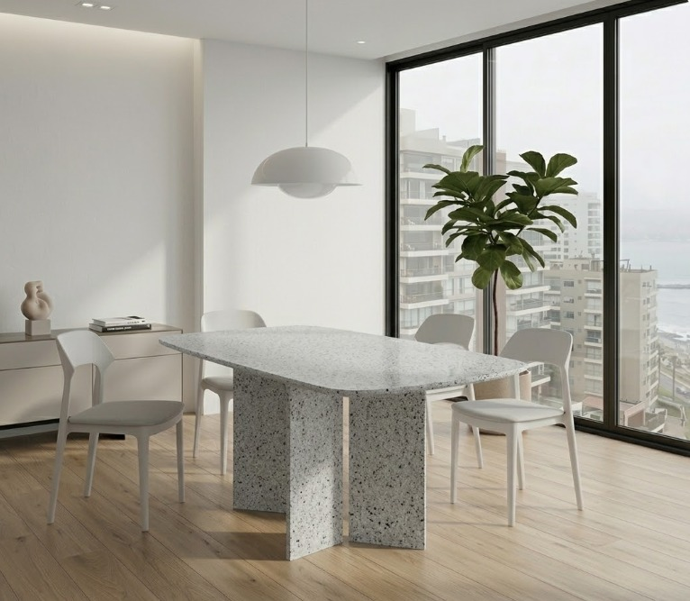
Un diseño arquitectónico en tu hogar. Su diseño monolítico y minimalista crea una sensación de amplitud y pulcritud perfecta para espacios modernos y elegantes.
Superior al mármol y las piedras tradicionales. Olvídate de las preocupaciones por manchas o fragilidad. El Solid Surface es un material no poroso y 100% reparable, mucho más resistente al uso diario. En caso de cualquier rayadura, puede pulirse para recuperar su estado original.
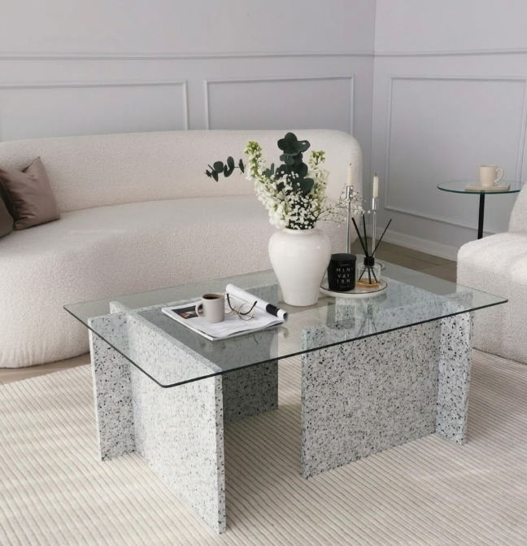
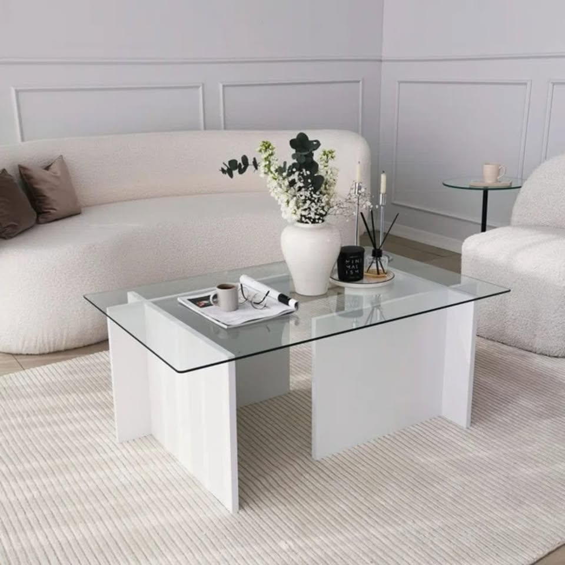
Renueva tu sala con una pieza de diseño arquitectónico. Nuestra mesa de centro destaca por su estética de bloque continuo, sin uniones visibles y con acabados de alta precisión. Una evolución superior al mármol o la piedra sinterizada.
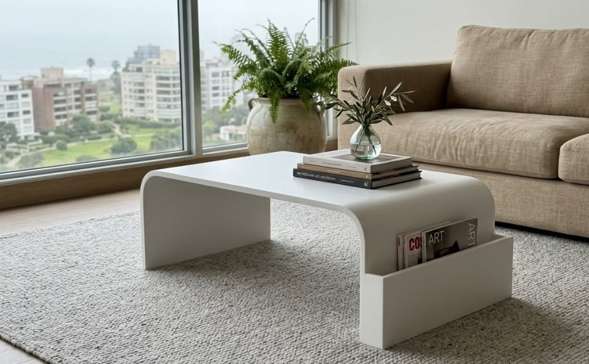
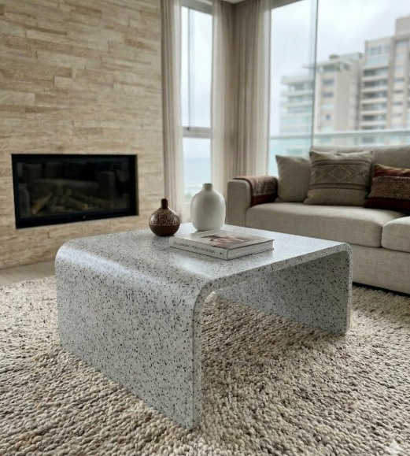
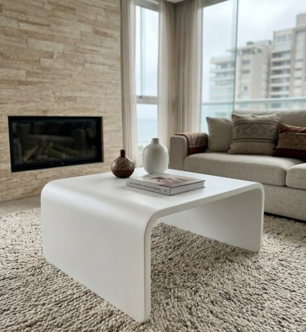
¡Eleva el estilo de tu sala! Si buscas una pieza que combine diseño vanguardista, durabilidad extrema y un acabado impecable, esta mesa es para ti. Curvas fluidas sin uniones y reparables; una evolución superior al mármol.
Al ser fabricantes directos, el estado del producto es siempre nuevo y fabricado bajo pedido (7 días calendario) para asegurar acabados de primera. ¡Podemos personalizar dimensiones para que encaje perfectamente en tu espacio!